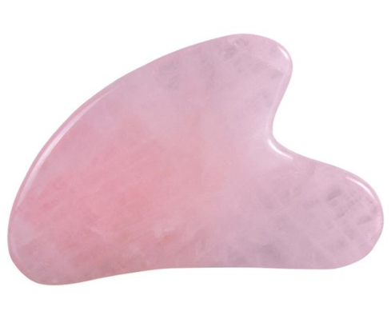

Question 1: Multiple Choice
Which type of massage is traditionally associated with the use of hot
stones?
- A) Swedish Massage
- B) Deep Tissue Massage
- C) Hot Stone Massage
- D) Shiatsu Massage
Question 2: True or False
In a standard massage protocol, the client's medical history is
irrelevant to the type of massage they receive.
Question 3: Fill in the Blank
The massage technique known for its deep, circular movements to help
break down knots and relieve tension is called __________.
Question 4: Image-based Question
Look at the image below. Identify the massage technique or tool being
demonstrated.

Options
- A) Gua Sha
- B) Cupping
- C) Tapotement
- D) Acupressue
Question 5: Short Answer
Explain in a few sentences the difference between the Petrissage and
Tapotement techniques.